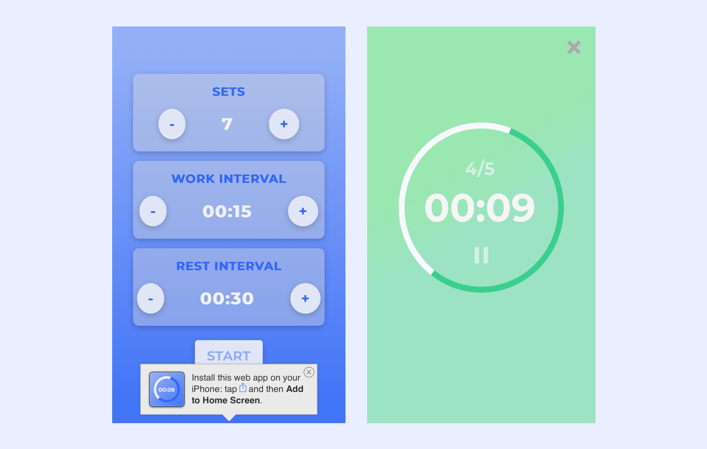

MY ROLE
I worked individually to develop a web-based application with HTML, CSS, and Javascript.
CONTEXT & CHALLENGE
BACKGROUND
I learned to build a unique application that takes advantage of gestures and accelerometers. Special consideration was given to limited screen real estate, low bandwidth internet access, no internet access, and touch screen devices.
GOALS
- Learn new techniques along with the best practices in mobile app design and development
- Have a comprehensive understanding of designing and developing interactive web applications for modern mobile devices
- Successfully build out a fully functional mobile app by focusing on design and user experience
PROCESS & INSIGHT
CHOOSING THE IDEA
My primary role, the data architect, consisted of managing and organizing all of the files our team needed to access during the development of our alpha, beta, and final. This included creating and managing foldes on Teams that contained things such as images, usability tests, Figma files, and documents. Every time I added new images to the folders, I would make sure to update the asset spreadsheet and update the team on any changes. It was also my job to make sure the naming conventions were uniform across the board and to upload the correct assets to my local folder which would then be pushed to Github.


DEVELOPMENT
ALPHA
My main priority for the alpha was to make sure we had everything we needed like images, fonts, and files to begin coding based off of the wireframes our UX/UI designers made. The primary coder and I built out a page together with multiple elements that a lot of the other pages had so that we knew how to get the core structure down. This also helped so that we were able to code on our own while still being on the same page. With that, any time any updates were made in the files the other coder was notified through Teams and made aware of the changes. For the alpha, we focused on a mobile layout, CSS customizations, and some microinteractions.
BETA
After fixing the alpha code based off the UX/UI designers' usability tests, our next phase was developing the beta. We refined our CSS, added more microinteractions, and made it responsive for tablets. As the coders, we thought the way that we approached the alpha worked well and decided to stick to that for the beta. I worked on integrating more assets into the app and responsiveness. We started thinking how we would use JS arrays to add more functionality to the user flow for the final.


RESULTS
FINAL
The biggest focus for the final was JS integration and making the user flow more dynamic. For example, we made each menu item load it's own custom information that the database remembered by the checkout page through JS arrays. I also implemented more complex microinteractions into the pages and made all of the pages responsive for desktop by adding columns to the layout. I updated any images based on the changes the designers made, added them into Teams, and updated the asset spreadsheet. The UX/UI designers went into the code and tweaked anything else such as layouts or customizations.
VIEW FINAL PROJECT HERE
TAKEAWAYS
The biggest takeaway was learning to work on a team with different roles. We learned how to communicate as well as our collaborative styles, which I think meshed nicely. I took on roles that I wouldn't normally see myself in, but I ended up embracing them and growing my skills which I enjoyed. Our team was able to make quick turnarounds and work during crunch times to develop or alpha and beta, and by the end we developed a very functional app backed up by two terms of research and work.